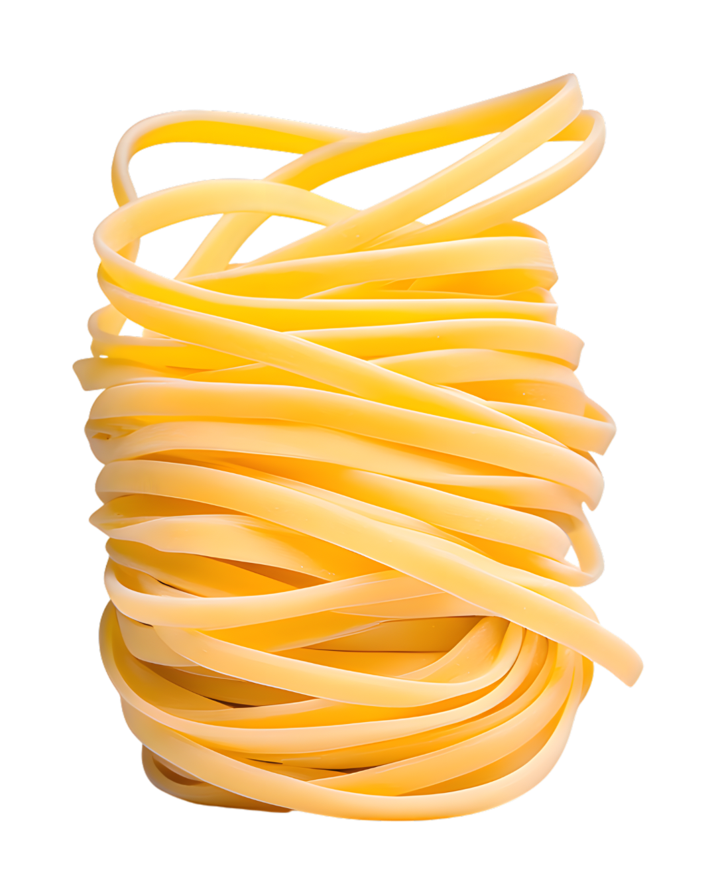
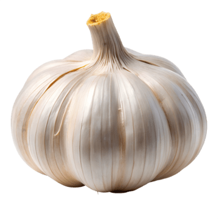
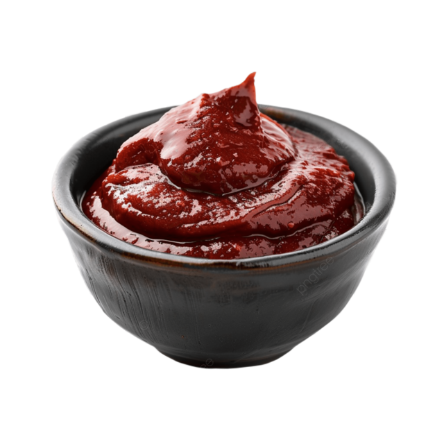
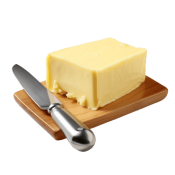
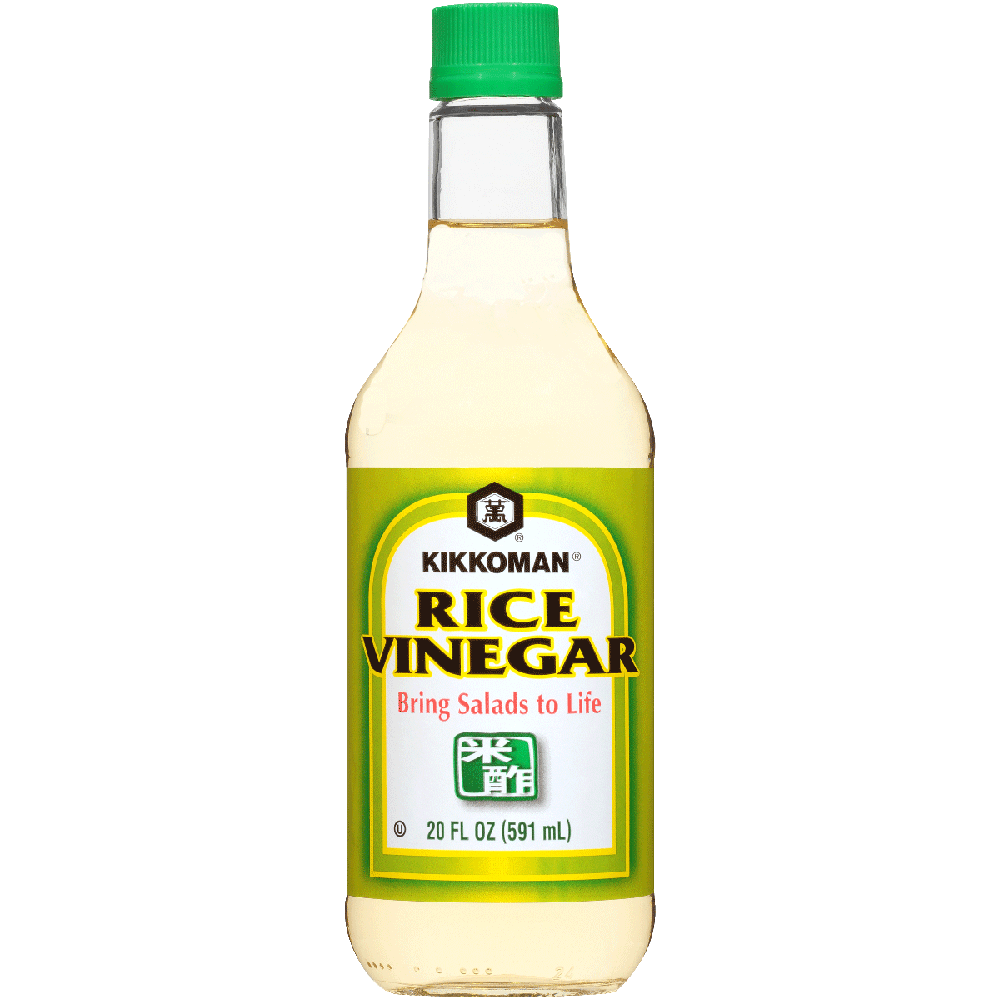
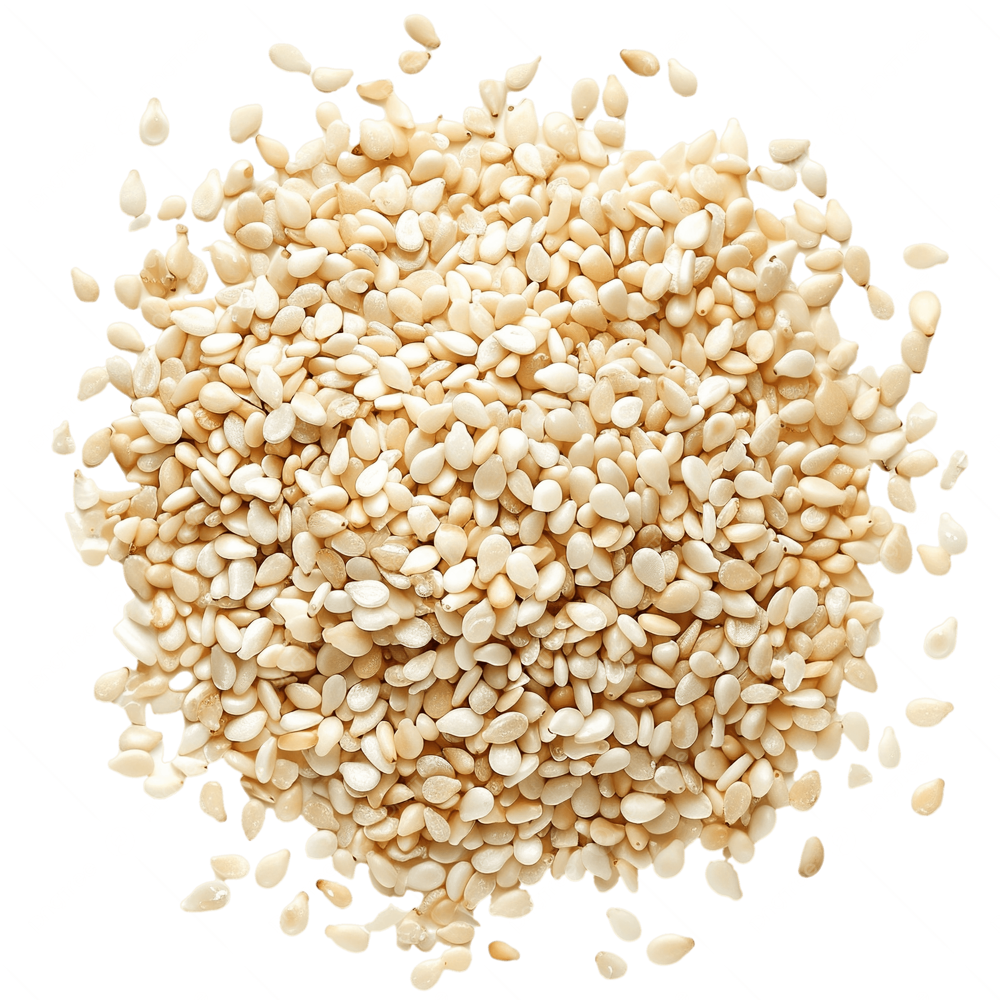
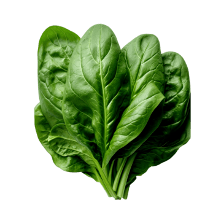
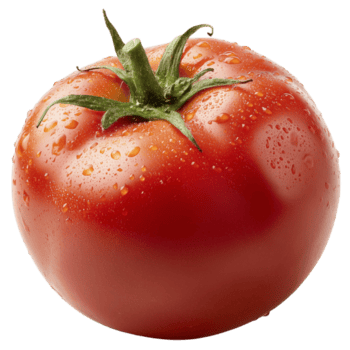
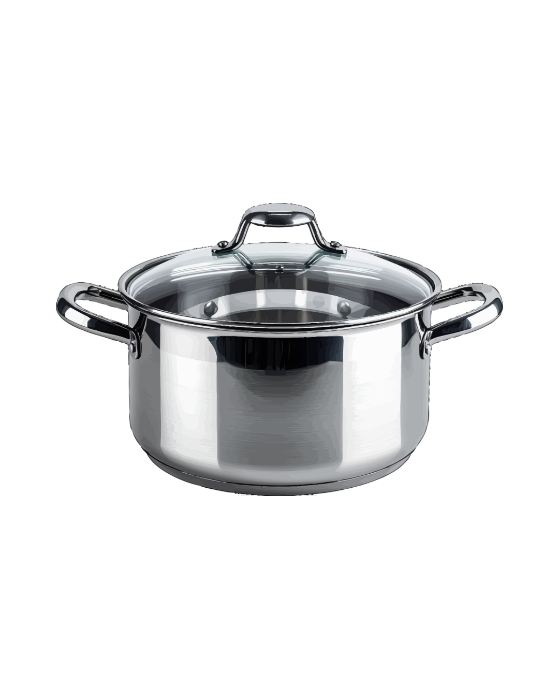
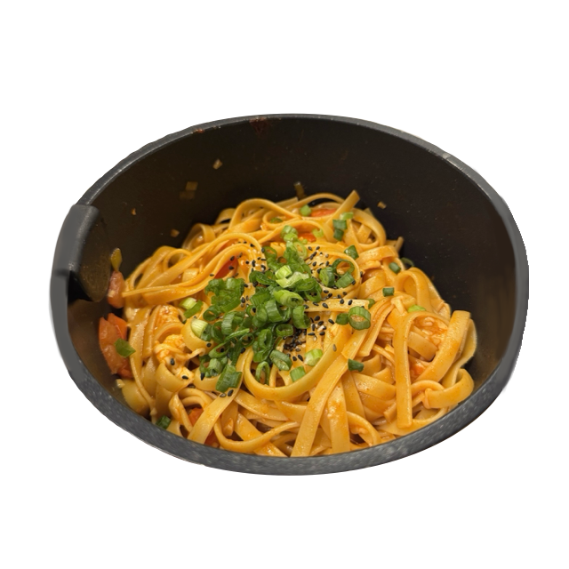

gochujang buttered noodles

༻❁𓌉◯𓇋❁༺
ingredients
- ✭ fettucine noodles (or any other pasta of your choice)
- ✭ garlic
- ✭ gochujang
- ✭ honey
- ✭ rice vinegar
- ✭ salted butter
- ✭ green onion
- ✭ tomato
- ✭ sesame seeds
- ✭ shredded cheese
- ✭ spinach









instructions
Step 1. Prep ingredients
Mince at least 6 garlic cloves, slice tomatoes into cubes, shred spinach, and chop green onions. Set these aside to be used in the sauce.

Step 2. Boil water in a pot
Pour enough water into a pot to boil the amount of pasta of your choice. Then, place the raw pasta noodles in the pot, allowing them to boil until al-dente (about 12 minutes).

Step 3. Sauté veggies while waiting
In a separate pot, melt at least 2 tbsp of butter and sauté the garlic, the white part of the green onions, and the tomatos on medium-low heat for about 4 minutes
Step 4. Make the sauce
Add at least a tbsp of gochujang (this is what makes the pasta spicy, so I usually put 2-3 tbsp), ~1 tbsp of honey, and 2 tbsp of rice vinegar to the sauté. Stir to combine, while keeping the heat on medium-low to let the sauce simmer for a bit. Try taste testing to see what you'd like to adjust!
Step 5. Drain the pasta
Try a noodle to see if the pasta texture is to your liking. If it is, take it out of the pot and drain it, leaving a little bit of water left.
Step 6. Migrate the pasta
Add the drained pasta to the sauce pot and slowly pour the leftover pasta water while stirring the noodles and sauce together. This will help thin out the gochujang and honey. You can also add the chopped spinach at this time so that it can be mixed in.
Step 7. Make it pretty
Garnish the pasta using the sesame seeds and chopped green onions. Optionally, I like to add shredded mozzarella and a fried egg on top, or add in breaded chicken.

Step 8. Enjoy!!!
Your tastebuds will thank you!!

༻❁𓌉◯𓇋❁༺
Recipe originally inspired by this video.